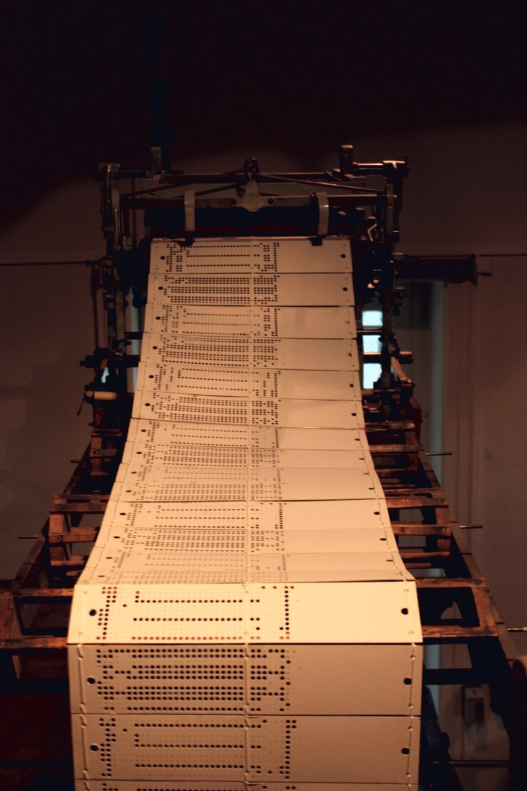
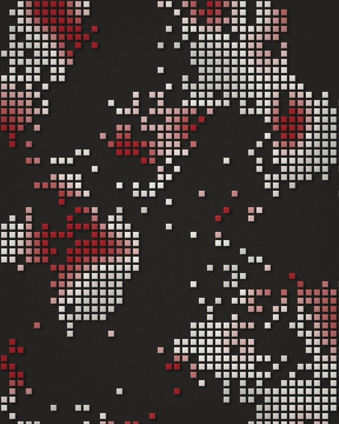
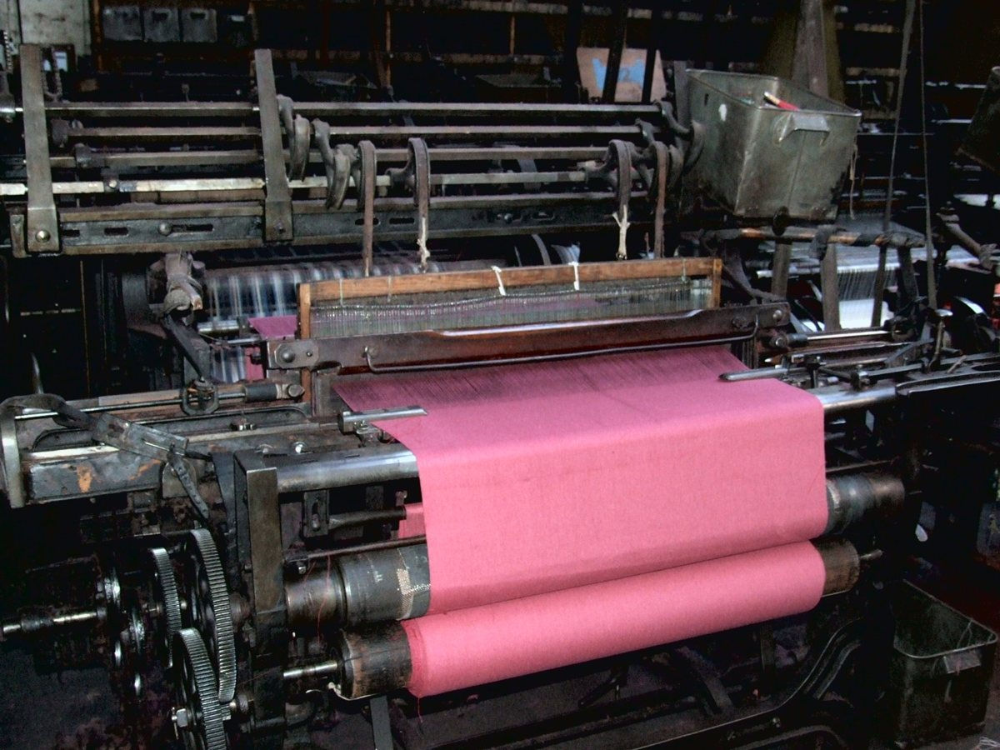
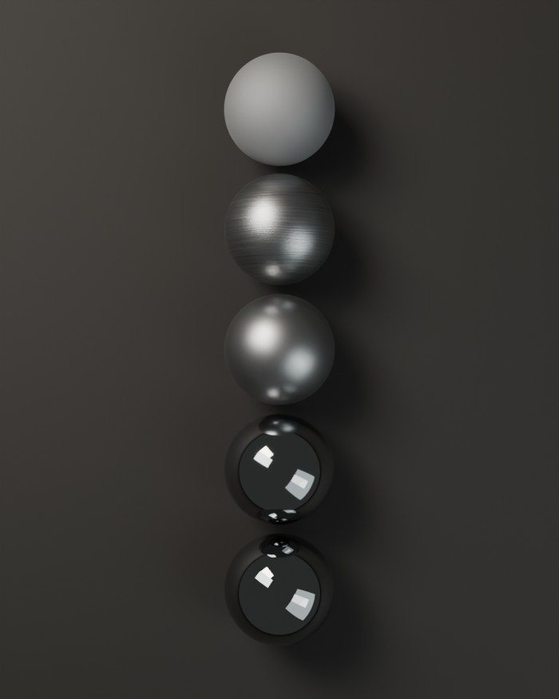
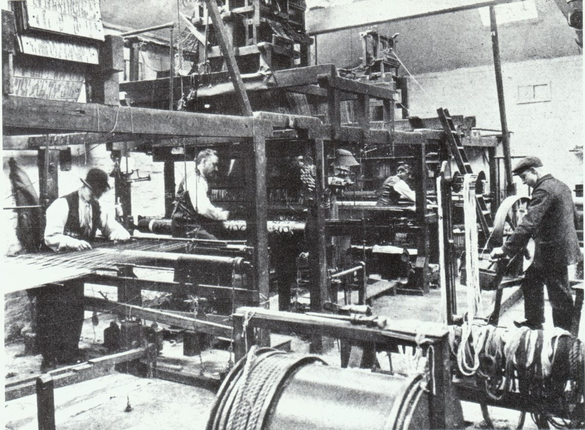
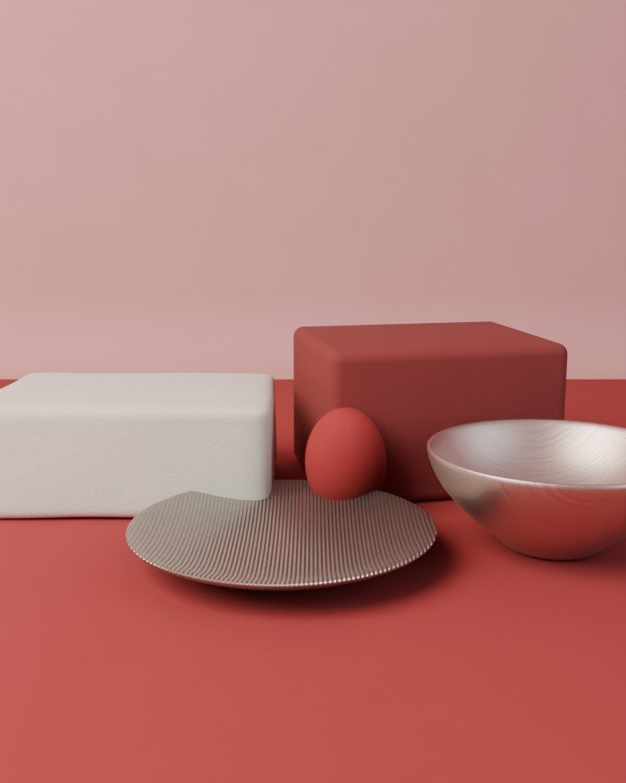
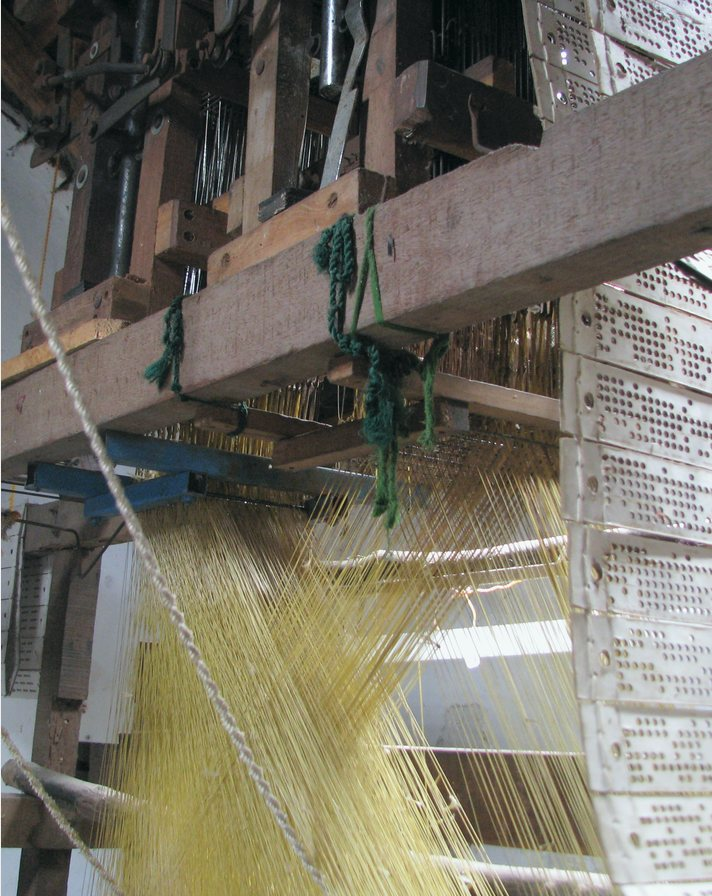

Who owns it
Not who made it, who owns it.






Abstract
When people argue about a thing, who made it, whether it is art, whether it is harmful, what are they really asking? Followed far enough, most of these arguments turn into questions of ownership: who owns the means, the name, the skill, the person and the ground where the thing ends up. The turn is old. The first copyright law (1710) gave rights to authors, but the London booksellers pushed it through; in 1831 the silk weavers of Lyon rose not against the Jacquard loom but over the price paid for their cloth; Halston sold the rights to his name in 1973 and later lost the right to design under it. Walter Benjamin turned the question in 1934, asking not a work's attitude to the relations of production but its position in them; institutional critique made that position its material, and Andrea Fraser concluded, "We are the institution." The law can even make the payer the author: in American copyright, a work made for hire belongs, authorship included, to the party that hired the maker. The skill stays partly with the maker, and lasts only if someone records and reproduces it. An object's standing moves with its owners and its links, not its material. In 1923 Liubov Popova and Varvara Stepanova designed prints for a state textile factory in Moscow; the prints did not change, but within a decade the Party had dissolved the independent art groups and the avant-garde lost its place. Today the same turn runs through tools and data: arguments over whether generated work is authored often stand in for who owns what it learned from and who is paid. The question reaches the person. Status is a set of things one is allowed to own: the freedom to move, property, the choice of what to buy, food, hygiene and shelter, how one feels, and in the end one's life. Law protects each, but none for good; when status is stripped it often goes from the outside in, each step called an emergency, and some never return. Hannah Arendt (1951) named what goes first: the right to have rights. Feeling seems the most our own, and we are appalled when someone tries to steer it. Yet Arlie Hochschild (1983) found workers paid to manage their feelings for a company; to feel freely, and to have that feeling count, is partly a privilege of status, and if feeling can be shared, as Durkheim and Raymond Williams described, so can its ownership. The question outlives the thing. It is not who made what becomes trash, but who owns the trash, the landfill and the sea it reaches; a spill can be fined, but no one holds title to the ocean it harmed. Out of touch: blaming the object or its material, the maker or the tool, while the decision and the benefit sit with whoever owns the means; and treating rights as permanent when each can be suspended. This theme reframes questions of authorship as questions of ownership, from the loom to the skin to the landfill, so that concern reaches the party that can act on it.
Image notes
(01) Punched cards strung into a chain that stores a woven pattern, jacquard loom. https://commons.wikimedia.org/wiki/File:Punch_cards_industrial_loom.jpg (Sunfox, CC BY-SA 2.0)
(02) Form study (pixels dark). Own render.
(03) Power loom with a pink cloth on the beam, Masson Mills, England. https://commons.wikimedia.org/wiki/File:Masson_Mills_WTM_12b_Power_Loom_5877.JPG (Clem Rutter, CC BY-SA 3.0)
(04) CMF study (ladder3 metal dark). Own render.
(05) The weaving shed at Merton Abbey, Morris and Company, about 1890. https://commons.wikimedia.org/wiki/File:Morris_and_Company_Weaving_at_Merton_Abbey.jpg (anonymous, for Morris and Co., public domain)
(06) Scene study (band color). Own render.
(07) Museum gallery with framed portraits on white walls, National Museum in Kielce, Poland. https://commons.wikimedia.org/wiki/File:Gallery_of_Polish_Painting_and_European_Decorative_Arts,_National_Museum_in_Kielce,_czerwiec_2025,_SOULinPIX_092.jpg (Krzysztof Poplawski, CC BY 4.0)
Impact



Direction
Every mark on a product, whether monogram, label, logo or signature, speaks in the maker's voice while it works as the owner's claim; Rembrandt signed "made it," but Degas's red stamp was added by his estate to sell what he left. Marks have been copied for as long as there have been marks, and style was never protected; what is new is how quickly a look is copied and how alike the marks themselves have become, until the cue that once said whose it was begins to fade. Marks are moving into data, where they could say who owns a thing, though only to whoever holds the record. Making follows. When anyone can make the same thing as well, the barrier turns out to have been labor and time, not taste. When making costs almost nothing, ownership moves to whoever owns what removes the friction (the machine, the model, the platform and the data it learned from) and to whoever owns attention. Authenticity is an ownership claim dressed up as a quality. The value of an art object has always rested somewhere other than its making, and that measure may be fading too. Whether design is good or bad is, unfortunately, an ethical question, and one with no right answer: the art world and the market each answer it differently, and neither answers it for good. What will good and valuable design be when anything can be made well, cheaply and quickly, with little waste, on a perfect line at home or in a large factory?
Approach
Translating the theme into a material approach
How the impact above becomes a material question: the target to reach and how success will be measured, set out as Before and After below.
- Approach
- current and previous approach; what worked, what didn't
- Materials
- fibers, constructions, finishes in use, past and now
- Tools
- equipment and software available, past and now
- Process
- how it is made today
- Against
- what the theme stands against
- Counter-case
- work that looks like the theme but fails it
- Improvement
- what will be better
- Materials
- what we need
- Tools
- what we need
- Process
- what changes
- Measure
- how success is checked
- Known issues
- why it hasn't been done or achieved before
- Side effects
- what it could bring
- Contingency
- plan if it fails
Resources
What we can work with today
The people, equipment, methods, materials and measures already available to carry out the approach above, and where the gaps are.
- Designers
- Name, studio; Name, studio
- Artists
- Name; Name; Name
- Mills
- Mill name, country; Mill name, country
- Labs
- Lab or institute, focus
- Vendors
- Supplier, product line
- Researchers
- Name, institution, field
- Existing cases
- A sentence on a brand or project already working this way and what it shows.
- Machines
- water jet loom, sonic laser, digital jacquard
- Media
- media format, print, film
- Software
- Blender, Illustrator, Vizcom
- Reference
- Wikipedia, AI, image archives
- Making
- pigment dye, laser cut, bonding
- Market
- segmentation, niche marketing, mass approach
- In store
- object, brand, where seen
- Media
- seen on TV, film, print
- Museum
- piece, collection
- Automotive
- fabric in current cars, model, year
- Feedback
- clinic, user test
- Testing
- lab tests, standards
- Expert
- professional opinion
- Online
- forums, online chat, reviews
References
- Books
- Author Name. Book title (year). Publisher.
- Articles and research
- Author Name. Article title (2025). Journal or magazine, vol. (issue), pages. URL.
- Institution or lab. Study title (2024). Report or paper number. DOI.
- White papers and vendors
- Company. Document title (2026). Publisher. URL.
- Mill or supplier. Product or material name (2026). Catalog, item number. URL.
- Exhibitions
- Venue. Exhibition title (2024). City, dates. URL.